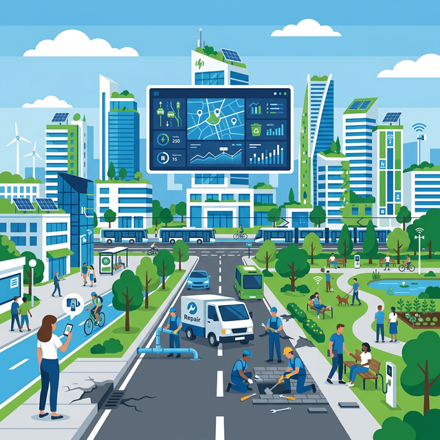
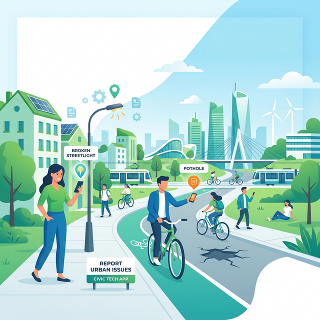

Connect with thousands of residents who are reporting civic issues, tracking resolutions, and collaborating with municipal departments to create cleaner, safer, and more efficient cities.


Spot a pothole or broken light? Submit a report with photo and location in seconds.
Neighbors verify and upvote issues. The community's voice grows stronger.
Follow progress as city officials respond and resolve – all in real time.
Municipal departments take action to fix the reported issues and update the status.
Provide your feedback on the resolution to help improve city services.
CrowdCivics is a cutting-edge civic engagement platform designed to bridge the gap between citizens and municipal authorities. Our mission is to empower residents to take an active role in improving their neighborhoods by providing a transparent, efficient, and collaborative tool for reporting and resolving civic issues. Use our platform to report problems like potholes, broken streetlights, and garbage dumps, and track the progress of your reports in real-time.